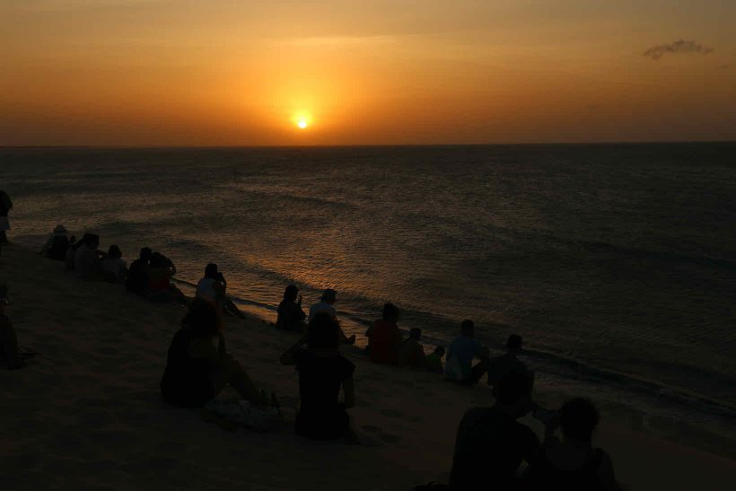
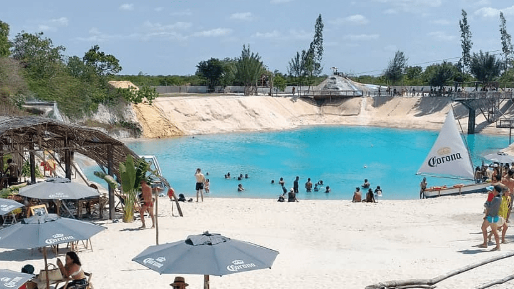

A Vila de Jericoacoara fica localizada na frente do mar e é a praia uma de suas principais atrações. As lagoas, formadas pelas chuvas e que têm águas cristalinas também são destaques da região. Passeios que levam ao lado Leste e Oeste da vila permitem conhecer toda a redondeza com facilidade.
O que fazer em Jericoacoara?
• Lagoa do Paraíso
Localizada no município de Jijoca de Jericoacoara, a Lagoa do Paraíso, que é considerada uma das melhores praias do Brasil – é uma das principais atrações da região. É uma lagoa de águas cristalinas, com tons de azul e verde. Ao longo de sua extensão estão alguns estabelecimentos, entre eles o Alchymist (foto abaixo), um clube que tem grande estrutura e várias áreas VIP.

A Vila de Jericoacoara fica localizada na frente do mar e é a praia uma de suas principais atrações. As lagoas, formadas pelas chuvas e que têm águas cristalinas também são destaques da região. Passeios que levam ao lado Leste e Oeste da vila permitem conhecer toda a redondeza com facilidade.
Os estabelecimentos que ficam na lagoa colocam redes na água para os visitantes aproveitarem – assim você curte a lagoa e descansa ao mesmo tempo, uma delícia! Para quem quer curtir a lagoa de verdade, recomendo passar todo o dia todo no local, que dependendo do seu gosto, pode ser tão bom quanto passar o dia na praia (ou ainda melhor).
Geralmente as pessoas visitam a lagoa durante o passeio pelo litoral leste, mas o tempo acaba sendo restrito. No centrinho da vila você encontra transportes que levam pessoas para passar o dia na lagoa e depois retornam para buscá-las.
• Duna do pôr-do-sol

A querida duna, um dos símbolos de Jericoacoara, é a grande atração da vila no fim de tarde. Quando o sol vai se aproximando do mar, uma legião de pessoas vai fazendo o caminho até o alto da duna para apreciar o sol. O programa é clichê mas é maravilhoso! Não deixe de ir! Dá para ir a pé da vila, com uns 10 minutos de caminhada.
• Lagoa azul
Você já começa a entrar no clima na chegada: atravessa a lagoa com uma jangada a vela para acessar o Restaurante Lagoa Azul. Além do amplo cardápio onde os peixes são o carro-chefe, tem mesas e redes dentro da água, uma delícia! Tecnicamente, essa é a mesma lagoa que a gente descreveu no tópico anterior – Azul e Paraíso são partes distintas da grande Lagoa de Jijoca.
Custa R$ 25 por pessoa para atravessar, valor que também te dá direito a aproveitar o parque aquático, que é pequeno, mas pode ser divertido para a criançada.
Com cada vez mais estrutura, o lugar tem restaurante, um espaço com mesas, guarda-sol, e é possível passar o dia por lá. O Buraco Azul está a aproximadamente 17 km de Jericoacoara. Faz parte do passeio Leste, mas é possível contratar um buggy ou transfer 4×4 para ir especificamente até lá. A entrada custa R$ 20.
• Lagun Beach Club

Com o sucesso do Buraco Azul, em junho de 2021 surgiu um concorrente de peso, o Lagun Beach Club. Com uma boa infraestrutura, ainda maior que a do Buraco Azul (e a poucos metros da atração), o local oferece petiscos, pratos muito bons e bebidas, além de vários pontos para tirar fotos curtindo o visual diferenciado e uma tirolesa. Tem até uma cachoeira artificial para refrescar e servir de cenário para os visitantes. O ingresso custa R$ 20.
• Árvore da preguiça
O passeio de buggy pelo Litoral Leste de Jericoacoara faz um trajeto que passa pela árvore da preguiça – uma árvore com galhos “deitados” devido aos ventos fortes de Jericoacoara -, pelas Lagoas do Amâncio, que ficam cheias em época de chuva, pelo Lagun, pelo Buraco Azul, pela Lagoa Azul, pela Lagoa do Paraíso, onde também inclui The Alchymist Beach Club.
É um passeio bem popular e que leva às principais atrações da região – não deixe de fazê-lo.
• Praia de Jericoacoara
Ela é a principal praia da vila, usada por praticantes de windsurf para aprender ou treinar o esporte. À frente do mar estão alguns hotéis, restaurantes e bares que durante a tarde oferecem um visual lindo para o pôr do sol. A praia de Jeri costuma ter um mar calmo e seu visual muda bastante com o subir e descer da maré.
Com cada vez mais estrutura, o lugar tem restaurante, um espaço com mesas, guarda-sol, e é possível passar o dia por lá. O Buraco Azul está a aproximadamente 17 km de Jericoacoara. Faz parte do passeio Leste, mas é possível contratar um buggy ou transfer 4×4 para ir especificamente até lá. A entrada custa R$ 20.
• Pedra Furada
Cartão postal de Jericoacoara, a Pedra Furada é uma atração muito boita e que rende belas fotos. A pedra com uma fenda no meio fica na beira do mar, e em um determinado período do ano, o pôr do sol ocorre “dentro” da pedra.
A dica é ir andando de Jeri até a Pedra furada pelo mar no período de maré baixa – a caminhada é linda, com praias pouco movimentadas e pedras diferentes. Com maré alta, é necessário fazer a trilha sobre o Morro Serrote.
• Passeio em Lagoa da Tatajuba
Situada no litoral Oeste de Jeri, a Lagoa da Tatajuba costuma ser conhecida através de passeios que contemplam essa região. A Lagoa tem alguns restaurantes simples em suas redondezas, com mesas e cadeiras na água, e a divertida brincadeira do toboágua na duna.
Pode ser uma boa opção para relaxar e para quem busca um lugar mais pacato, sem tanta gente. Mas costuma ventar bastante ali.
É um passeio bem popular e que leva às principais atrações da região – não deixe de fazê-lo. Seja em turma ou sozinho, você vai se divertir muito na prancha que desliza rápido pela areia até a água. O esquibunda (ou tobogã) foi 15 reais por pessoa, que dá direito a ir 3 vezes, a queda é bem grande e a descida é em alta velocidade, dá pra se divertir bem.